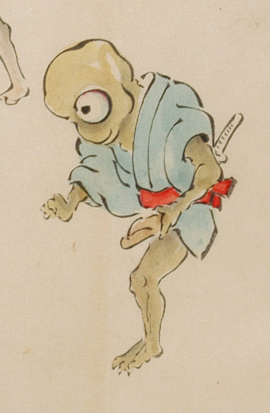

一つ目で足が1本の化物。禿頭で、青色の着物に赤い帯を締め、脇差を差している。手足とも3本指で鋭い爪が生えている。
出典：親書誌：U426_nichibunken_0053：化物婚礼絵巻；バケモノコンレイエマキ／日付：2006／資源識別子：U426_nichibunken_0053_0012_0001
Copyright (c)2010- International Research Center for Japanese Studies, Kyoto, Japan. All rights reserved.